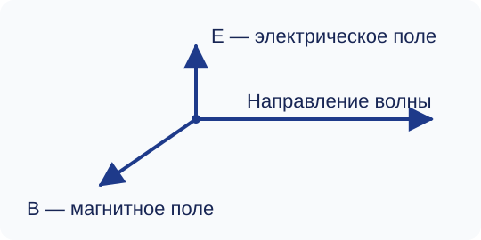

Электромагнитные волны, их свойства и скорость. Шкала электромагнитных волн
Солнечный свет доходит до Земли через космическое пространство. Звук через вакуум пройти не может, а свет может: при распространении света меняются электрическое и магнитное поля. Радиоволны и рентгеновское излучение имеют ту же природу, хотя их частоты и длины волн различаются.
Как распространяется электромагнитная волна
Один из источников электромагнитных волн — антенна с переменным током. Заряды в антенне движутся с ускорением. Изменения электрического и магнитного полей распространяются от антенны в окружающее пространство и переносят энергию. Самим зарядам для этого не нужно покидать антенну.

На схеме наклонная стрелка передаёт третье пространственное направление. Поэтому на плоском изображении углы выглядят по-разному, хотя все три направления взаимно перпендикулярны.
На границе сред волна может отражаться и преломляться. Например, часть света отражается от стекла, а прошедшая часть при наклонном падении меняет направление. При поглощении вещество получает энергию волны. Электромагнитным волнам также свойственны интерференция и дифракция. Дифракция заметнее, когда размер препятствия или отверстия сравним с длиной волны.
Скорость, частота и длина волны
Все электромагнитные волны в вакууме распространяются со скоростью света \(c\approx 3{,}0\cdot10^8\ \text{м/с}\). За один период \(T\) волна проходит расстояние, равное длине волны \(\lambda\). Так как \(\nu=1/T\), в вакууме
где \(\lambda_0\) — длина волны в вакууме, а \(\nu\) — частота. При той же скорости увеличению частоты соответствует уменьшение длины волны.
В прозрачной среде для рассматриваемой частоты скорость \(v\) связана с показателем преломления \(n\) соотношением \(v=c/n\). При переходе через неподвижную границу двух сред частота сохраняется. Поэтому меняется длина волны:
Шкала электромагнитных волн
В таблице диапазоны идут от меньшей частоты к большей. Длины волн в вакууме убывают в том же направлении. Границы диапазонов приблизительны. Микроволны выделяют как часть радиодиапазона.
| Диапазон | Пример |
|---|---|
| Радиоволны с длинами больше микроволновых | Радиовещание на средних волнах |
| Микроволны | Беспроводная связь Wi‑Fi |
| Инфракрасное излучение | Тепловизор регистрирует инфракрасное излучение предметов |
| Видимый свет | Свет, воспринимаемый человеческим глазом. Длины волн примерно от \(380\) до \(750\ \text{нм}\) |
| Ультрафиолетовое излучение | Ультрафиолетовая лампа вызывает свечение некоторых меток |
| Рентгеновское излучение | Рентгенография |
| Гамма-излучение | Излучение при некоторых переходах атомных ядер |
В видимом диапазоне от красного к фиолетовому частота растёт, а длина волны уменьшается. При входе света в стекло его длина волны меняется, а частота сохраняется. Чтобы определить диапазон по длине волны, используют длину в вакууме.
Разобранные примеры
Длина радиоволны
Частота \(100\ \text{МГц}\)
Переведём частоту: \(100\ \text{МГц}=1{,}0\cdot10^8\ \text{Гц}\). Тогда длина волны в вакууме равна
Свет переходит из вакуума в стекло
Длина волны в стекле
Длина световой волны в вакууме \(600\ \text{нм}\). Для этого света показатель преломления стекла \(1{,}5\). Скорость в стекле равна \(v=c/1{,}5=2{,}0\cdot10^8\ \text{м/с}\). Частота при переходе сохраняется, поэтому длина волны уменьшается в столько же раз:
Коротко о главном. Электромагнитная волна переносит энергию и может распространяться в вакууме. В вакууме её скорость равна \(c\). На неподвижной границе сред сохраняется частота, а длина волны меняется вместе со скоростью.
Самостоятельная работа
Вопросы для самопроверки
1. Почему свет от Солнца доходит до Земли, а звук через вакуум не проходит? 2. Как направлены \(\vec E\) и \(\vec B\) относительно друг друга и направления распространения плоской волны? 3. По какую сторону от видимого света на шкале частот находятся инфракрасное и ультрафиолетовое излучения?
Задачи
- Передатчик излучает электромагнитную волну частотой \(150\ \text{МГц}\). Найдите её длину в вакууме.
- Длина световой волны в вакууме \(500\ \text{нм}\). Найдите частоту. Затем определите скорость и длину этой волны в воде с показателем преломления \(n=1{,}33\). Что происходит с частотой при входе в воду?
- Лазерный импульс летит до отражателя по вакуумной трубе и возвращается в точку отправления. Между отправлением и возвращением прошло \(2{,}4\cdot10^{-6}\ \text{с}\). На каком расстоянии находился отражатель?
- У двух волн длины в вакууме \(1{,}0\ \text{мм}\) и \(250\ \text{нм}\). У какой волны частота больше? Во сколько раз?
- Электромагнитные волны с длинами \(2\ \text{м}\) и \(2\ \text{см}\) падают на экран с отверстием шириной \(2\ \text{м}\). Для какой волны дифракция будет заметнее? Обоснуйте по отношению длины волны к ширине отверстия.